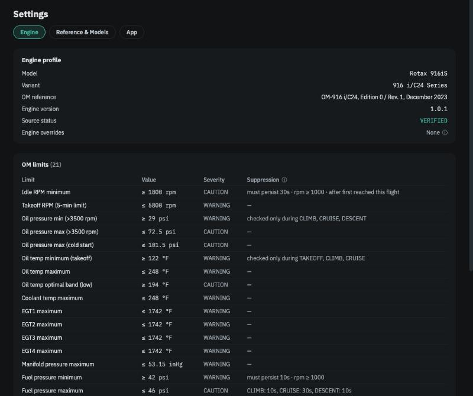
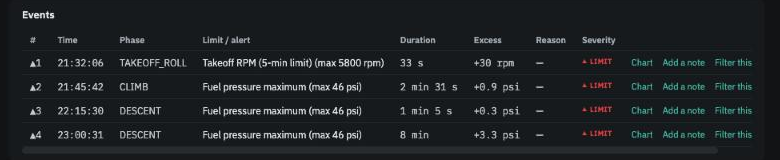

Operators Manual limits and events¶
In brief. The Rotax Operators Manual sets limits — temperatures, pressures, RPM, boost, time at takeoff power. When a reading crosses one for long enough to matter, the app records an event: when, in which phase, for how long and by how much. The engine computer's own ENGINE ECU alert is treated the same way, once the app has sorted the expected occurrences (start, lane check, shutdown) from the unexpected. Events are listed in the Events table on the Flight view and summarised on the Operators Manual limits card; a flight with any carries a LIMIT badge.
Where the limits come from¶
Each workspace is tied to one engine model, and its limits come from that model's Operators Manual — the edition and revision are shown under Settings → Engine alongside the full table. The table is read-only: the limits are Rotax's, not the app's and not yours. What you control is what to do about an event that keeps happening (see Your decisions).
Twenty-one limits are checked on a 916iS, including per-cylinder EGT maximums, the EGT split between cylinders, manifold pressure, fuel pressure both ways, bus voltage both ways, and the five-minute rule for takeoff power. The 915iS and 912iS tables differ in a few values and in what exists at all — the 912iS has no turbo and no EGT-split limit. Operators Manual limits by engine lists them side by side.

How an event is found¶
A reading past a limit for a single second is not an event. Three rules keep the Events table honest:
Some limits need the excursion to last. Idle minimum must persist 30 s before it counts — a brief dip as the governor settles is normal. Fuel pressure minimum needs 10 s. Fuel pressure maximum needs 10 s in climb and descent but 30 s in cruise, where switching tanks causes a longer, harmless spike.
Some limits are only checked when they make sense. Low oil pressure, low fuel pressure and low voltage are not checked with the engine stopped. Oil pressure minimum is checked only once airborne. The oil-temperature-before-takeoff minimum is checked from the takeoff roll on. Fuel pressure maximum is not checked during taxi at all, because that is when you run the pump test. The Suppression column in the limits table shows these rules per limit.
Nearby excursions are one event. Once a reading has gone past a limit, the event does not end until the reading has been back inside for 30 s. A value that bounces across the line for two minutes is one two-minute event, not forty tiny ones.
What remains is listed in the Events table: time, phase, which limit, duration, how far past, and a link that jumps the chart to that moment. Each limit appears at most once per flight.

Severity labels¶
Each limit carries a label from the manual's own wording — WARNING or CAUTION — and each event inherits it. The labels are there to help you read the table. The app does not treat the two differently: it does not hide a caution, escalate a warning, or decide on your behalf that one deserves action and the other does not.
Time at takeoff power¶
The manual allows takeoff power — above 5,500 rpm, or 100 % power — for no more than five minutes at a stretch. The app measures the longest continuous block you spent there (with the same 30 s rule joining brief dips). Going past 300 s is an event like any other. Coming within a minute of it is noted on the Time at takeoff power card as a close call, which usually means power was not reduced promptly after takeoff — a long climb-out, a delay — and is worth a glance at your habits rather than your engine.
The 5,800 rpm ceiling is separate: it is a hard limit with no time allowance. A brief overshoot as the governor catches a prop is the most common cause, and the kind of thing a filter with a small tolerance is for.
Engine computer alerts¶
The engine computer raises an ENGINE ECU caution on the panel for many reasons, most of them routine. The app records every occurrence and sorts it by what the aircraft was doing:
| When it happened | What the app makes of it |
|---|---|
| While the avionics and engine computer were coming up, before or during start | Expected. Counted on the Engine computer alerts in flight card, nothing more. |
| During the lane check — stationary, RPM in the lane-check band, two short runs | Expected; this is the single-lane test. The flight header reports both lanes ✓, one lane only or not detected. |
| At shutdown, as the engine is cut | Expected. Counted only. |
| On the ground with the engine running, but not a lane check | An event. Listed in the Events table with the reason it is not a lane check — for instance that the RPM was below the lane-check band. |
| In flight, from the takeoff roll to the landing roll | An event, and the one that matters. Not expected; worth having the engine computer's fault log read at the next maintenance. |
Occurrences shorter than a few seconds are counted as blips and not treated as events, because a single logged reading can be an artefact. The lane-check band depends on the engine — around 4,000 rpm on the 916iS and 912iS, around 2,500 rpm on the 915iS.
Where events go next¶
Events are facts about one flight, but their pattern over many flights is what tells you about the engine. Every limit that has ever been exceeded in a workspace gets its own panel on the Trends page, showing on which flights it fired and by how much. And a limit that fires on every flight for a reason you understand — a sensor that reads a little high, an installation quirk — can be given a filter with a note, after which the app shows those events collapsed into one line and keeps watching for the day the pattern changes.
Further reading: Spec 01 (engine contract) §§ on limit detection and CAS classification, and Spec 09 (limit filters), in the repository.